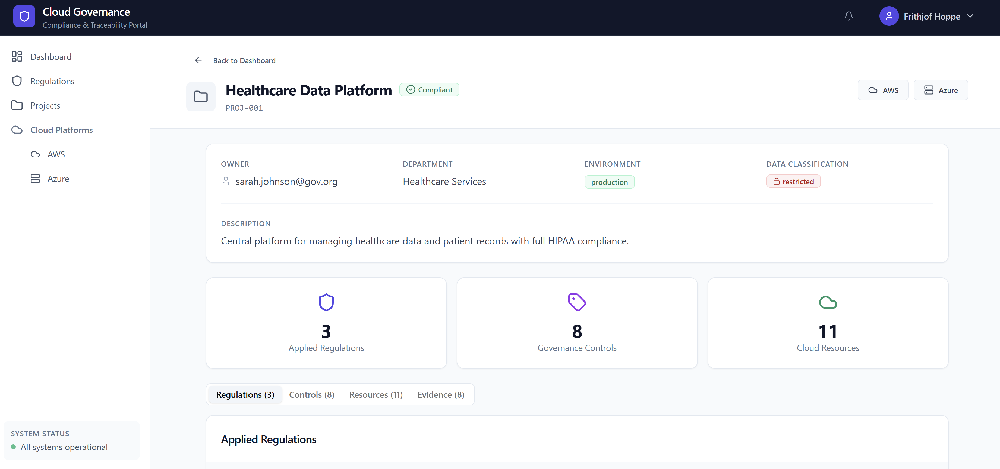
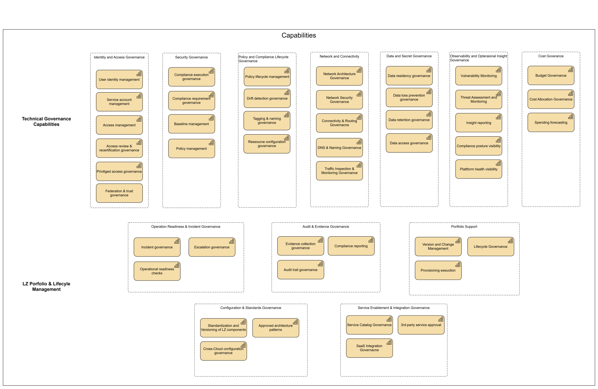
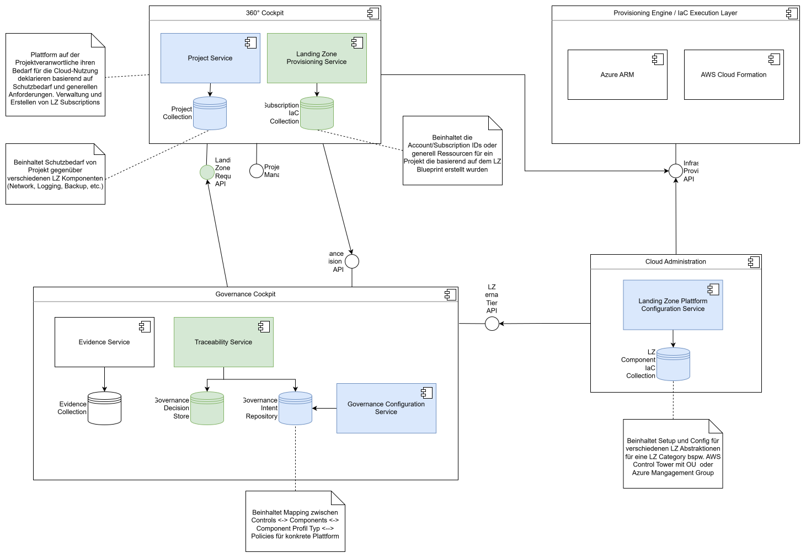

Enterprise‑Architektur von multicloud‑konformen Landingzones
Die Schweizer Bundesverwaltung verfolgt mit verschiedenen Vorhaben eine Hybrid‑Multi‑Cloud‑Strategie. Unterschiedliche Cloud‑Provider und On‑Premise‑Infrastrukturen führen jedoch zu isolierten Strukturen und machen die Governance komplexer. Diese Arbeit entwickelt einen provider‑agnostischen Rahmen für Landing Zones, der eine konsistente Nutzung mehrerer Clouds ermöglicht.

Abbildung: Mock-Up eines potententiellen Governance-Cockpit für eine Landing Zone
Ausgangslage
Die Bundesverwaltung verfolgt eine Hybrid‑Multi‑Cloud‑Strategie, die die Nutzung verschiedener Cloud‑Anbieter und eigener Infrastrukturen kombiniert. Das Bundesamt für Informatik und Telekommunikation (BIT) agiert als Cloud Service Broker und stellt Verbindungen zu mehreren Hyperscalern sowie einer privaten Cloud bereit. Aufgrund der unterschiedlichen Strukturelemente der Plattformanbieter können diese nicht immer ganzheitlich betrachtet werden. Dadurch entstehen inkonsistente Sicherheits‑ und Governance‑Mechanismen und die Wiederverwendbarkeit von Architektur‑ und Betriebsmodellen über Plattformgrenzen hinweg wird erschwert. Um diese Fragmentierung zu vermeiden, strebt das BIT eine Homogenisierung mithilfe des Konzepts der Landing Zone an.
Problemstellung / Projektziel
Ziel der Arbeit ist die Entwicklung eines provider‑agnostischen Architekturansatzes für Landing Zones in Hybrid‑Multi‑Cloud‑Umgebungen. Der Ansatz soll die zentralen Komponenten einer Landing Zone systematisch identifizieren und in einer konsistenten Gesamtsystemarchitektur strukturieren. Forschungsschwerpunkte sind dabei die Beantwortung der Fragen: Welche Komponenten machen eine Landing Zone in einer Hybrid‑Multi‑Cloud‑Umgebung aus? Wie muss eine geeignete technische Architektur gestaltet sein, damit sie die Anforderungen des BIT erfüllt und plattformunabhängig angewendet werden kann? Die Eignung des entwickelten Ansatzes wird anhand von Teilarchitekturen exemplarisch untersucht und mit definierten Evaluationskriterien bewertet.
Abbildung 1: Traceability‑ und Landing‑Zone‑Architektur

Das Bild zeigt die kombinierte Architektur der Traceability‑ und Landing‑Zone‑Komponenten. Es verdeutlicht, wie Governance‑ und Compliance‑Kontrollen in die Landing Zone integriert werden und wie die Traceability‑Komponenten miteinander interagieren.
Abbildung 2: Capability-Map

Die prototypische Architektur veranschaulicht das Zusammenspiel von Governance-Cockpit, Traceability-Services und der automatisierten Provisionierung von Landing-Zone-Ressourcen. Sie zeigt, wie Governance-Entscheidungen technisch umgesetzt und über Infrastructure-as-Code-Mechanismen konsistent auf unterschiedliche Cloud-Plattformen angewendet werden.
Abbildung 3: Beispiel PoC für Traceability Use-Case

Die Architektur‑Prinzipien dienen als Leitplanken für den Entwurf der Landing Zone und definieren grundlegende Anforderungen wie Sicherheit, Standardisierung und Wiederverwendbarkeit. Sie bilden die Grundlage für die erarbeitete Lösung.
Entwickelte Lösung und Vorteile
Für die Konzeption der Landing‑Zone‑Architektur wurde ein reduziertes Enterprise‑Architecture‑Framework eingesetzt. Mithilfe einer Capability Map und ausgewählten Use‑Cases wurde der Anwendungskontext analysiert. Darauf aufbauend entstand ein provider‑agnostisches Architekturmodell für Landing Zones, das eine konsistente Governance in Hybrid‑Multi‑Cloud‑Umgebungen ermöglicht. Die Architektur wurde mit einer Traceability‑Architektur in einem Proof of Concept konkretisiert und anhand von Architekturprinzipien, Qualitätsattributen und Trade‑off‑Kriterien evaluiert.
- Systematische Identifikation und Strukturierung von Landing‑Zone‑Komponenten unabhängig vom Cloud‑Provider
- Erstellung einer Capability Map als Grundlage für geschäftsgetriebene Entscheidungen
- Integration einer Traceability‑Architektur zur Nachverfolgbarkeit von Anforderungen und Compliance‑Kontrollen
- Erhöhte Wiederverwendbarkeit und Konsistenz durch einheitliche Architektur‑Prinzipien
- Verbesserte Governance und Compliance über mehrere Cloud‑Plattformen hinweg
- Skalierbare und provider‑agnostische Umsetzung des Proof of Concept mit AWS und Azure
Die Evaluation zeigt, dass die entwickelte Architektur einen konsistenten Governance‑Leitrahmen über verschiedene Cloud‑Plattformen hinweg bereitstellt und die Anforderungen des BIT erfüllt. Die Lösung bietet eine Basis, um zukünftige Projekte effizienter zu planen und zu betreiben.
Evaluation
«Die Evaluation bestätigt, dass eine provider‑agnostische Strukturierung von Landing Zones möglich ist und einen konsistenten Governance‑Leitrahmen für Hybrid‑Multi‑Cloud‑Umgebungen unterstützt.»
Ergebnis der Bachelorarbeit
Schlüsselbegriffe
- Landing ZoneProvider‑agnostisches Rahmenwerk für Cloud‑Strukturen
- Hybrid‑Multi‑CloudVerbund mehrerer öffentlicher und privater Cloud‑Plattformen
- Enterprise ArchitectureMethodischer Ansatz zur Strukturierung von Organisationen
- GovernanceRichtlinien und Prozesse zur Einhaltung von Sicherheit und Compliance
- TraceabilityNachverfolgbarkeit von Anforderungen und Kontrollen
Auftraggeber
Bundesamt für Informatik und Telekommunikation (BIT)
Campus Meielen
Eichenweg 3
CH-3003, Bern
www.bit.admin.ch
Team
Studierende
Frithjof Hoppe
Benjamin Dätwyler
Betreuung
Romano Roth (Experte)
Sebastian Graf (Fachbetreuer)
Auftraggeber
Sebastian Matyas
Thierry Perroud